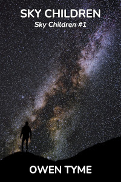

Sky Children
Sky Children is a prequel series to The Wizard’s Scion, centered on the adventures of Zechariah Jacobs, an electrical engineer that crashes on a supposedly unexplored planet, which happens to give him magical powers via a mysterious virus, making him a wizard.
This series is currently unpublished.
Sky Children
 The series starts with volume one, titled Sky Children, in which Zechariah crash lands on an ‘unexplored’ planet, only to uncover a terrifying government conspiracy to hide the existence of the Mind Fire virus, which grants magic powers to those infected by it.
Even worse, the intelligence people will do just about anything to hide the truth, including nuking their own colonies, from orbit. In point of fact, such a tragedy once happened on Zechariah’s new home world, using the guise of a quarantine to corral the witnesses, for extermination.
Learning these facts, Zecharaih vows to do something about it and eventually, when he and his friends find a buried star ship, they force that revelation on the entire empire he left behind, because the people have a right to know.
Wrath of the Sky
 As a result of
revealing the existence of the Mind Fire virus to the public,
Zechariah’s new home world catches the eye of his old nation, the
Northwestern Empire, which sends an invasion fleet of ships, thousands
strong, to wipe out the evidence so the truth can be erased.
As a result of
revealing the existence of the Mind Fire virus to the public,
Zechariah’s new home world catches the eye of his old nation, the
Northwestern Empire, which sends an invasion fleet of ships, thousands
strong, to wipe out the evidence so the truth can be erased.
Zechariah and his people work against to gain allies and build defenses of all kinds, ranging from the scientific to the magical.
Wild Sky
Having settled things with the Northwestern Empire, Zechariah is contacted by the the new empress, who was on his side of the recent conflict. With a civil war looming, due to Zechariah’s actions, he and his people step up to aid her.
However, as things grow more dire, Zechariah seeks to achieve ever greater feats and falls to the temptation of using rage magic, a dangerously addictive, but incredibly powerful form of magic. Caught up in the addiction, he begins to destroy his entire life by hiding it from everyone.